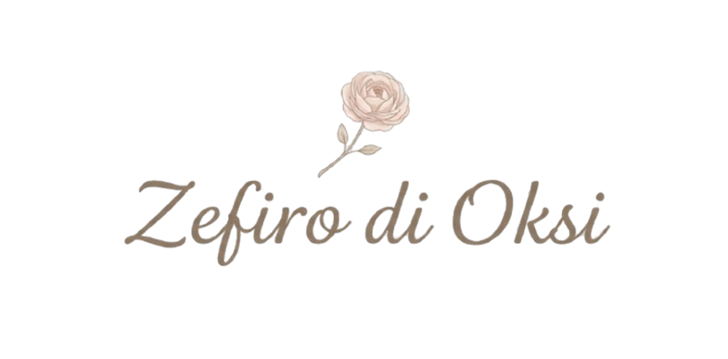
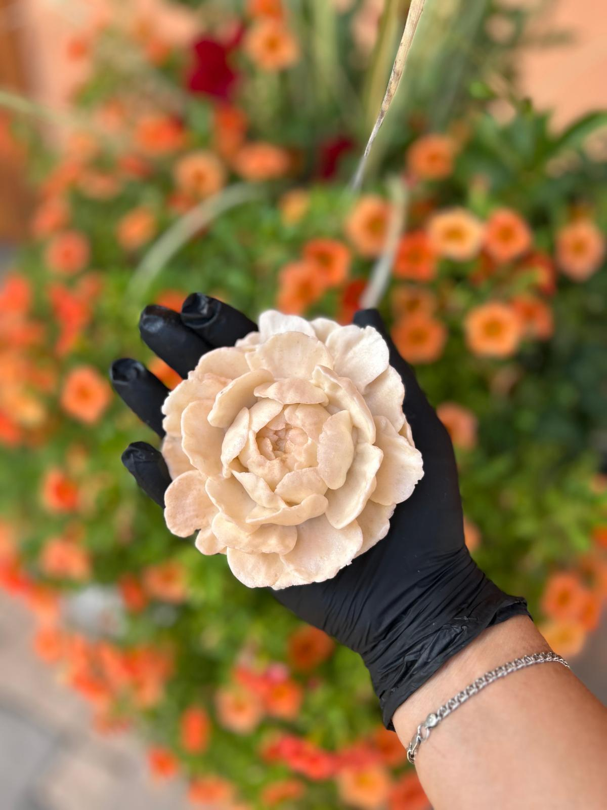

Zefiro di Oksi

Benvenuta, benvenuto. Questo è il mio piccolo mondo dolce.
Fiori di zefir fatti a mano, con cura.


Benvenuta, benvenuto. Questo è il mio piccolo mondo dolce.
Fiori di zefir fatti a mano, con cura.
